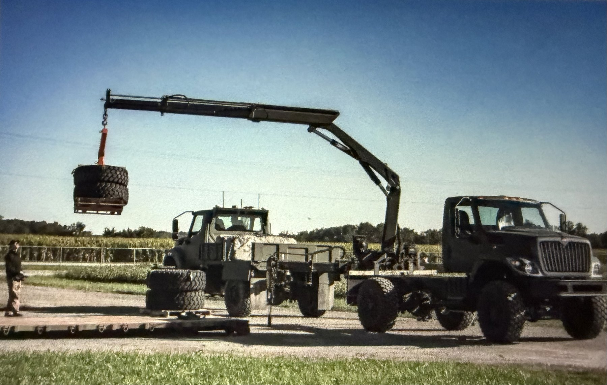
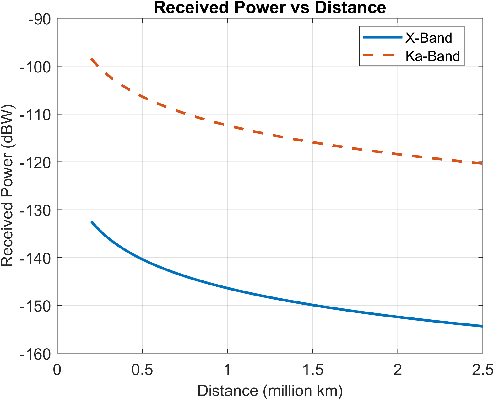
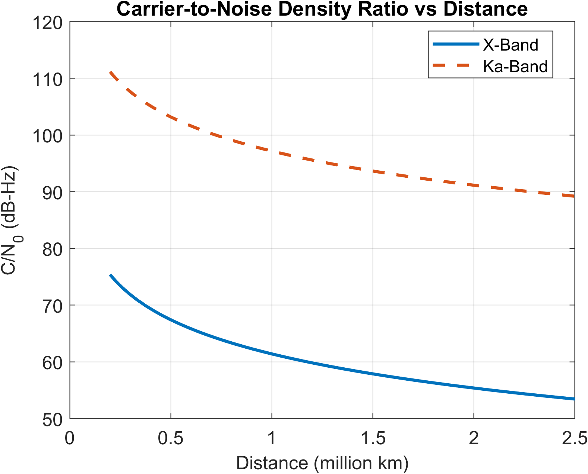
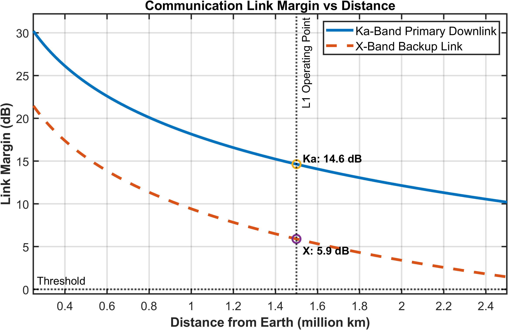
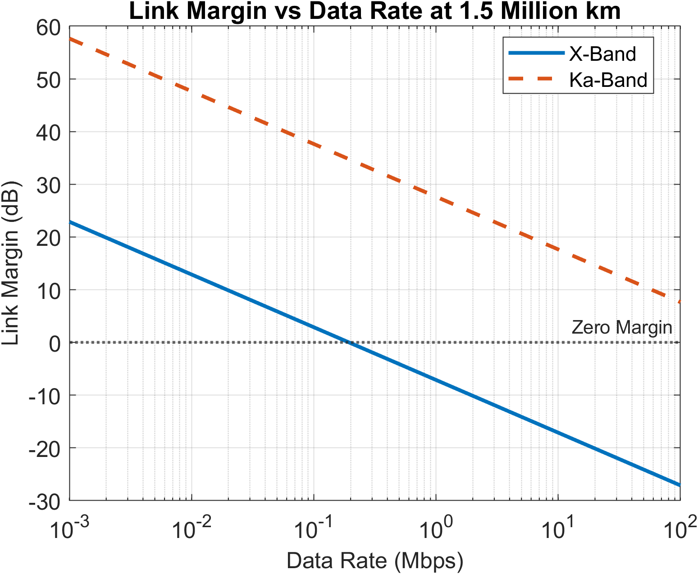
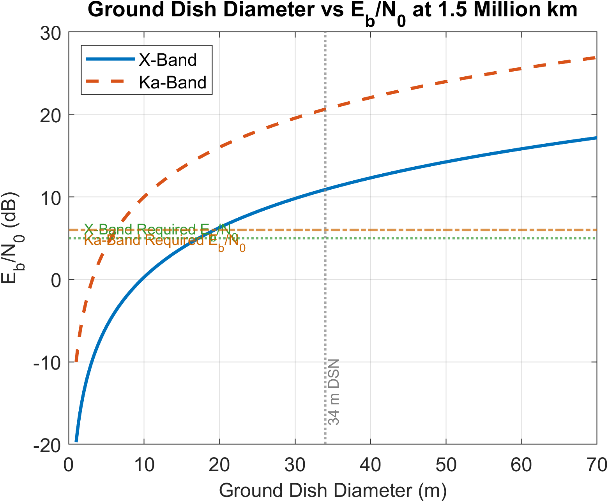
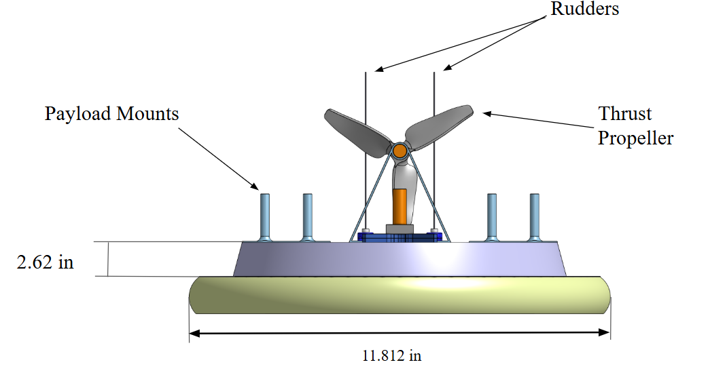
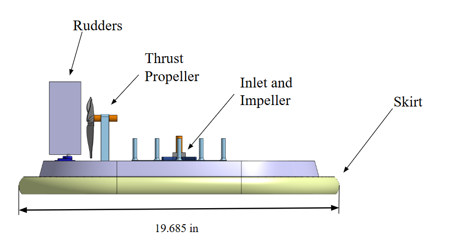

Aerospace engineer working across structural validation, CAD, and space instrumentation, from tow bumpers and chassis to a plasma contactor for a Los Alamos whistler-wave mission concept.
Validated tow bumper and chassis integrity across 12 projects using Siemens NX FEA to meet customer requirements.
Designed CAD fixtures for custom applications such as septic tanks, and integrated specialized electronics and hardware into center console and CAN bus systems across 4 projects.
Helping research ways to implement rear-mounted X-ray detection modules on one of the company's vehicle models.
Built an HTML-based document management system integrated with cloud infrastructure and custom dashboards, centralizing data for 500+ engineering projects.
Developed a quote automation tool that cut quote entry time by 80%, from 60 to 10 minutes per quote.

Truck-mounted crane lifting a pallet of tires, ND Defense.
June 2025 — December 2025 · Detroit, MI
DTE Energy
Power Distribution Engineering & Design Intern
Engineered city electrical grid conversion projects in ESRI ArcMap and AutoCAD Electrical, generating detailed work packages and circuit diagrams impacting 100K+ customers.
Orchestrated and implemented new transformers for coverage-wide deployment across Detroit, Michigan.
Collected field data and supported construction plan development in ESRI.
January 2025 — June 2025 · Detroit, MI
DTE Energy
Program Management Co-op
Supported design and commissioning of electrical systems across 15 concurrent infrastructure projects.
Authored work orders and project proposals that streamlined planning workflows and reduced approval cycle time.
Built a Power BI dashboard covering 150+ concurrent and 400 past projects to streamline project meetings.
May 2024 — August 2024 · Ann Arbor, MI
Hyundai Motor Group
Vehicle Energy Efficiency Intern
Utilized ETAS INCA to analyze vehicle performance data and calibrate fuel-economy parameters through CAN bus vehicle communication networks.
Optimized deceleration fuel cut-off (DFCO) strategies and transmission shift logic in latest ICE models, contributing to significant vehicle fuel-efficiency improvements.
Researched hybrid propulsion architectures and extended-range EV systems, synthesizing findings into technical reports for Korean engineering teams.
Research & Current Projects
2 projects
Research Systems Engineer — Whistler-Wave Mission (SPACE 582)
Aug 2026 — Present · LANL-sponsored
Graduate space systems design project sponsored by Los Alamos National Laboratory, centered on transmitting VLF whistler-mode waves from a small satellite.
Designing a small-satellite mission to transmit ~10 kHz whistler-mode VLF waves, using a plasma contactor targeting ~100× local density enhancement to shrink the loop antenna from ~200 m to ~30 m.
Defined the power configuration for a single shot (contactor ignition, ~600 W run, loop drive): ~2–3 kJ per shot but ~1 kW peak, so peak power rather than energy sizes the battery.
Modeling loop antenna deployment: geometry and motion studies in SolidWorks/CATIA, kinematics and motor sizing in MATLAB, structural checks in ANSYS Mechanical, and radiation resistance in CST.
Undergraduate Research Assistant
Sept 2025 — April 2026 · Ann Arbor, MI
Includes communications and telemetry design for a Sun–Earth L1 halo-orbit spacecraft concept (AERO 483 preliminary design review).
Analyzed the effects of geomagnetic disturbances on spacecraft RF communication links to support ongoing space weather monitoring research.
Tested RF components using a vector network analyzer (VNA) to verify impedance matching and evaluate S-parameters.
Conducted aerospace vehicle simulations using STK and MATLAB scripts to evaluate ground station visibility and communication link budgets.
Selected a dual X-band / Ka-band architecture for the L1 concept, with Ka-band as the primary downlink and X-band as backup, based on a trade study of flight hardware.
Modeled received power, carrier-to-noise density ratio, link margin, and data rate against distance from Earth, verifying 14.6 dB (Ka-band) and 5.9 dB (X-band) margin at 1.5 million km and compatibility with 34 m DSN antennas.

Received power vs. distance. Ka-band sustains higher power across the full range.

Carrier-to-noise density ratio (C/N0) vs. distance.

Link margin vs. distance. Both bands clear threshold at L1.

Link margin vs. data rate at the L1 operating distance.

Ground dish diameter vs. Eb/N0. Confirms DSN compatibility.
Design Projects
3 builds
Hovercraft Design & Implementation Competition
University project
Designed and built a competition hovercraft capable of navigating an obstacle course while transporting payloads.
Integrated thrust propulsion, inlet and impeller hardware, rudders, and payload mounts into a compact vehicle layout.
Implemented Arduino-based control with sensors and actuators to improve maneuvering precision during course navigation.

Front view — payload mounts, rudders, thrust propeller.

Side view — inlet/impeller and skirt layout.
Michigan Aeronautical Science Association (MASA)
Sept 2024 — Present · Aerodynamics & Recovery
Led design, manufacturing, and testing of fin-mounted rollerons for passive roll stabilization on a solid-body rocket.
Modeled and iterated designs in CAD to improve aerodynamic performance and stability.
Achieved an approximately 50% reduction in roll rates, improving overall flight stability.
M-Racing Formula SAE Team
Sept 2023 — Sept 2025 · Aerodynamics & Powertrain
Modeled secondary wings in CATIA and validated performance with Star-CCM+.
Conducted wind tunnel testing to correlate simulation and experimental data, contributing to a 9% increase in performance.
Skills
Programming & analysis
Python MATLAB / Simulink C++ C VBA HTML Git MBSE (SysML) Mathematical Modeling